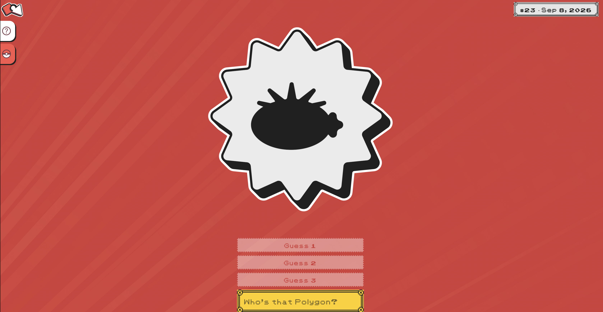

Who's That Polygon?
A daily guessing game where players identify a Pokémon from its low-poly silhouette as more of the artwork is revealed.
Play Who's That Polygon? →
The Ironclad Booster Pack
A mod for the roguelike deckbuilding game "Slay the Spire" that adds 10 original cards to the card pool for the character of The Ironclad. Card designs and art by me.
View on Steam Workshop →
The Silent Booster Pack
A mod for the roguelike deckbuilding game "Slay the Spire" that adds 10 original cards to the card pool for the character of The Silent. Card designs and art by me.
View on Steam Workshop →
It Ain't Easy Being a Mod
Created for the 2023 GMTK game jam (Theme: "Role Reversal"). A (vaguely) Papers-Please inspired game in which you are a Disc- I mean, "Chaos", server moderator who must enforce the server's rules by deleting offending messages.
Play on itch.io →
Infinite Dynasty
Created for the 49th Ludum Dare game jam in 2021. (Theme: "Unstable"). A strategy game about managing a series of successive dynasties in an empire.
Play on itch.io →
Jerry Mander: The Rise and Fall of the American Dream
Created in 2021. A biting political satire about the corrupt American electoral system. It is also a game about shooting sheep into voting booths.
Play on itch.io →
Rules for Robots
Created for the 2020 GMTK game jam (Theme: "Out of Control"). A puzzle-platformer in which you control a robot that has a limited number of actions (AKA "controls") that it can perform per
Play on itch.io →